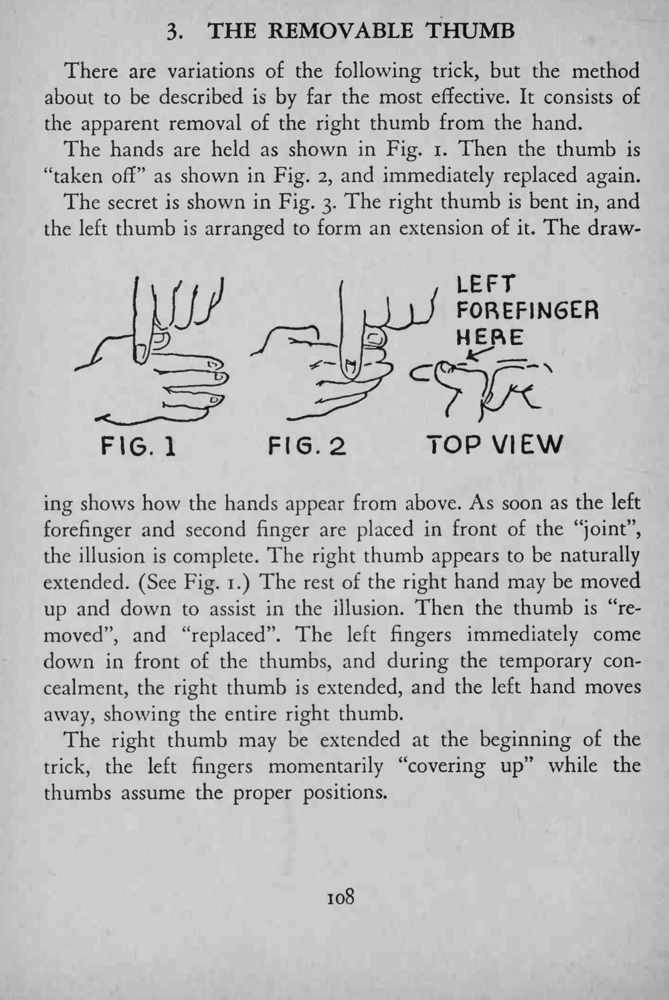

魔术师把右手拇指从手上“取下来”，停一下又装回去，右手看起来完好无损。
左手两指要正好挡住关节接缝，动作连贯；取下那一刻手要保持原来的朝向。

There are variations of the following trick, but the method about to be described is by far the most effective. It consists of the apparent removal of the right thumb from the hand. The hands are held as shown in Fig. i. Then the thumb is "taken off" as shown in Fig. 2, and immediately replaced again. The secret is shown in Fig. 3. The right thumb is bent in, and the left thumb is arranged to form an extension of it. The drawing shows how the hands appear from above. As soon as the left forefinger and second finger are placed in front of the "joint", the illusion is complete. The right thumb appears to be naturally extended. (See Fig. 1.) The rest of the right hand may be moved up and down to assist in the illusion. Then the thumb is "removed", and "replaced". The left fingers immediately come down in front of the thumbs, and during the temporary concealment, the right thumb is extended, and the left hand moves away, showing the entire right thumb. The right thumb may be extended at the beginning of the trick, the left fingers momentarily "covering up" while the thumbs assume the proper positions.